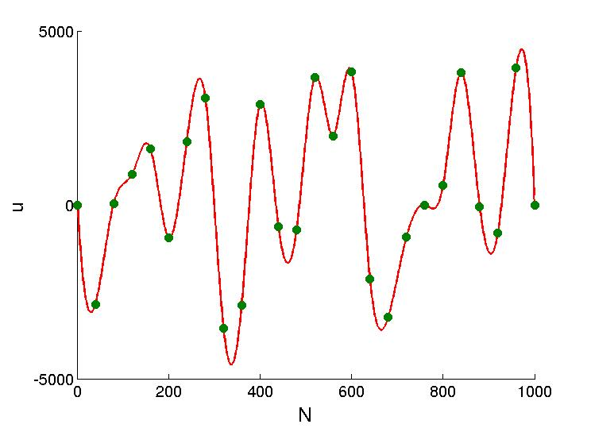

FileName : initial_u
Contents
Description
Generates the random initial guess of controls depending upon the input parameters specified in the input file.
For example, the following plot is with gra.N=1000; R=40; and u_max = 8000

The green points are randomly generated after every Rth point and then a smooth cubic function is interpolated from these points using matlab inbuilt function spline.
function u = initial_u(u_max,R) global gra u = zeros(gra.N,gra.m); for j=1:gra.m u(:,j) = rand_u(u_max,R); end %**************************************************** function u_r= rand_u(S,R) global gra x=[1 R:R:gra.N-1 gra.N]; y=[0 S*(rand(1,length(x)-2)-.5) 0]; xx = 1:1:gra.N; u1_r = spline(x,y,xx); hold on plot(xx,u1_r) plot(x,y,'ro') return